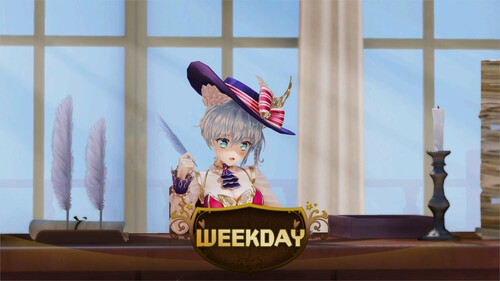
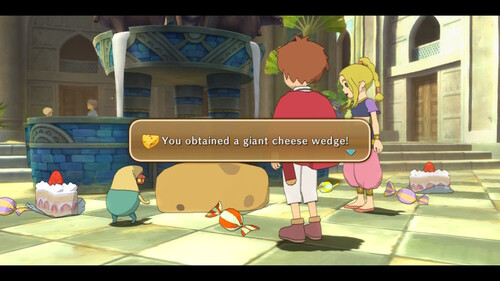
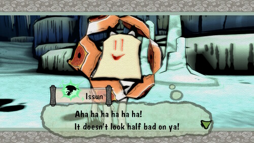
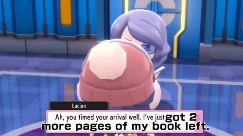
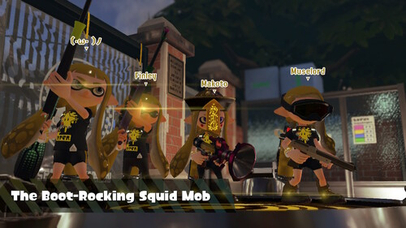
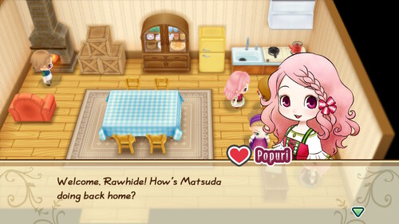
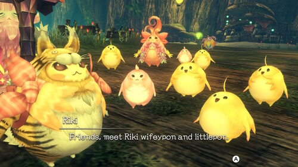
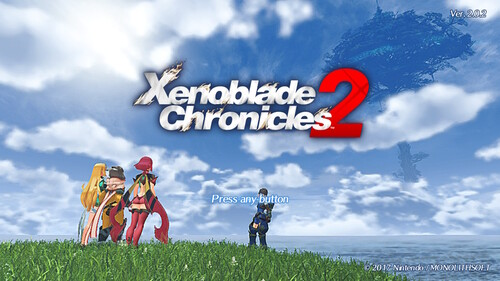
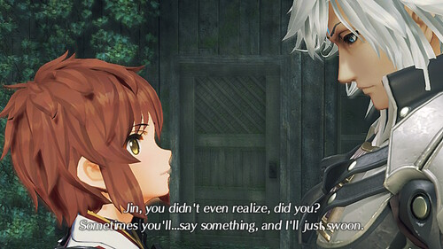

Did I love it? It'll be here. Did I hate it? It'll be here.
I generally avoid reviewing games unless I hate them so much I refuse to finish them. I won't recommend games I havent finished so I'll note any game I haven't completed (if it is completable).
Spoilers?? I promise nothing but I'll try to be good.
Yes, I paid $60 for half a game. No, I may not be buying the next one despite being a fan since gamecube.
I used to love Isabelle and now I've tossed all my Isabelle merch into a box to forget about her telling about her video chat with her parents or her falling asleep watching tv or ...
It's a half assed game with no items. It appears well polished but has no content. The DLC with actual content never came out btw. They did add some things they left out from New Leaf. Might as well play New Leaf though. Your villagers will have a lot more interesting things to say.
Remember the track that played 24/7 for the first few days of the game? F*ck you Nintendo.
Nov 2021 edit: The DLC and update is finally out and I feel like this game may have been enough content to release as a full game. I still don't know where Gracie is and I would like to upgrade my Nook shop.
Completed to 100%. Playtime was "20 hours or more". Guide was used as sparingly as I could handle.
Our heroine, Teuta, is very cute! She has a good personality and perhaps not the best character to self insert to. Unfortunately, she is a time traveler. I don't think the plot relied too heavily on this trope, but it's a weakness for the game. She's 21 years old and drinks like one (not a compliment). Once in a while, you play from the boy's perspective and get to look at her. It's a plus!
Common route was fun. Skip to next choice is offered for read text and well needed. The route for your boyfriend is unlocked largely through a personality survey which was bulls%t. For your convience, I have compiled information stolen from other guides into a table to tell you whose affection you increase with each answer.
| Q | Yes | No |
| 1 | Limbo | Scarecrow |
| 2 | Helvetica | Limbo |
| 3 | Scarecrow | Mozu |
| 4 | Mozu | Helvetica |
| 5 | Shu | Limbo |
| 6 | Scarecrow | Shu |
| 7 | Mozu | Helvetica |
| 8 | Mozu | Shu |
| 9 | Limbo | Helvetica |
| 10 | Scarecrow | Shu |
Each route reveals a little more about their world and aren't reliant on playing any before or after another. Two boyfriends are licensed doctors at the ages of 25 and 26. Feel free to age them up at least 5-10 years. Mozu is autistic. My favorite boyfriend turned out to be worst boyfriend, but ymmv. The writer(s) seem to be a little mystified by technology so please try not to roll your eyes too hard if you have ever used a computer. Shu's route has a really weak twist, which you should pretend didn't happen.
After completing each boyfriend route, you unlock the resolution to the common route's conflicts, which was not resolved during any boyfriend route. The cliffhanger at the end of the common route was ignored. The ending feels fast and forced. I did not enjoy it at all. The story (in more places than one) relies heavily on plastic surgery being able to change an entire image, which is even more weak writing.
The game is rated M for the boys being nasty boys. They are not above boy talk. But for Teuta, only kissing! Chu~!
This game is set in present time, yet smoking is allowed indoors in many places. I did find out there are states where smoking is still allowed indoors, but the setting of the game is fake New York, where this law has also been passed. It's very fun to hear the Japanese narrator speak English in small places throughout the game.
Art review: Some portraits are really stiff. One very important character is stuck with a stiff portrait, but main characters have better ones in addition to a stiff one. The artist or director refuses to put anyone in an open butt hospital gown. Boys have nipples. One boyfriend gets a hairstyle cut to look disheveled instead of the artist dishevelling his hairstyle. Overall, cute art with minor complaints.
Translation/localization complaints: Two characters have names that change spelling throughout the game. A single non-US spelling of a word was used in this game set in the US. There are multiple parts of the game where voices are heard with no translation because there's no text box, including the final post credits. Subs were not added for this. Twice, the lines overflow off screen during Scarecrow's route. There's a few typos, but it wasn't bad.
Captain Toad is so cute that I cried when I first saw him. If you love things that are cute and little puzzles, you will like this game.
Forewarning: I played Catherine on the PS3 and only got Katherine true end. I didn't do K's true end (or good) this time, but I did the rest. I technically should have seen all the endings though.
This game has like 5 new endings, JP voices, and idk like 10 more voice options for Catherine!! Have you ever wanted to hear Iori-chan voice Catherine?? It's awesome. Also a remix mode where you get Tetris pieces instead of only single blocks. I played the remix for my playthrough and it was fun. I can't remember how to play normal.
Catherine and Katherine both get an alternate endings. Catherine's is awesome, Katherine's is boring.
RIN. Perfect design. Cute personality! What could go wrong!?! A lot. Playing Rin's route made me want to put down the game and never pick it up. I somehow managed to power through just barely. It was awful. I did not have any problem with Rin until doing her route.
Overall, I would recommend this game over the PS3 version. Just don't do Rin's route. The JP voice track was exactly what I needed to be convinced.
I bought this for $10 on clearance and it's definitely worth that or less. If you ever wanted to play Tsum Tsum without the microtransactions or an arcade machine, maybe you should buy this. The other party minigames are stupid at best, but I spent a couple hours playing Tsum Tsum. The original game is handheld only in portrait mode. I highly recommend not spending much money on this game.
About as good as a picross game gets! My big complaint is that the BGM songs are only about 2 minutes long and continuously loop until you exit to the menu and go to settings and change the song. I don't want to listen to the same song 10 times while I do a 20 minute puzzle. A random song option would improve this game so much. There are no touch screen controls if you are interested in those.
I had some issue with the controls or assist change in the first update and I don't have hope for them fixing it.
Pretty fun but it's not very long! Only like 5 hours. Tank controls are very hard to get used to.
This port is fully touch screen playable. Unfortunately you can't play it without joycons being connected. There's no backwards for text, but I can't remember if that existed in the original. I wish they had the option for pixel art, but all the art has been cleaned up. I'm not sure it's better this way. There's a load option with multiple save files, so you don't have to close the software or restart the console when you choose the wrong evidence to present.
I originally played this around 2019 on the NDS. It's around 20 hours long but somehow I took 4 months to get through it. Characters are all over the top. Scenarios are ridiculous. Major conflicts of interest?? Plenty. I LOVE it. Edgeworth and Phoenix have a good dynamic and make a good pair in court.
Best song: Pursuit ~ Cornered. Absolute jam. Top song from every AA game I've played so far.
If you are looking for a great LoZ game, this is not your game. This is nothing like a LoZ game; it is a walking simulator with LoZ characters. I love wandering around and discovering new things and there are so many places to wander! My favorite genre of game is "walking game" probably. The soundtrack is a joke.
I have yet to find all of the cute little koroks. I love koroks!!!
I haven't played ALL of the LoZ games, but this one is my favorite!!! I laughed, I cried, I got stuck for 3 hours on that d&mn raccoon. It's a very faithful remake with some new additions, but I wish they kept the photo booth! Welcome addition: it sure is nice to have extra buttons instead of having to switch your items every 30 seconds.
Face Shrine and Animal Village are my favorite tracks.
(unfinished) I didn't expect it when I bought it but, this is like Sim City with anime girls. The story seems pathetic and the scenario is retarded. It feels like the entire game is cameos for characters in games I've never played. I havent finished the game but I don't expect the story to improve.
There's a bug in the playtime tracker so your time will include the time spent in sleep mode. This soon will be my top played game of all time.
If you want to play Sim City with anime girls, this game is probably for you!! Don't expect much else.
Cute story. It didn't end up with a super happy ending like I expected. It's an overworld style RPG that feels like it inspired a lot of Youkai Watch's gameplay. Marcassin is basically Howl without the flamboyant personality. Your party members will drain their MP at any given chance (if you let them) and it is infuriating.
Port issues: My game crashed multiple times and even once during saving. My save file was luckily not lost otherwise I would have called it quits half way through.
I only bought this because it was $9 and I wanted to build the piano. I built the piano and didn't play with it. Now it's just taking up space. Also the reflective stickers on the piano aren't staying on.
Update: I took the piano apart and put it back in the box and it was not as fun as putting it together.
This game has beautiful style and fun gameplay. I had no idea how goofy this game was going to be, but it was very goofy! I was very shocked to see how much boobs and butts were shown. What's this rated?! You gain the ability to pee on enemies as a taunt, but why is a female wolf lifting her leg?!
My issue is that the story wasn't anything captivating and it felt like it just kept going. I did hit some major slowdown (like 14fps) during a couple battles. I did not have any difficulty in battle until the Kusa 5 which are not even necessary to fight. I had a little trouble with a dungeon puzzle, died a couple times, then suddenly the puzzle was dumbed down to baby easy without asking. I would have liked to try it a few more times. I did have to look up answers to a few of the puzzles. If you're looking for a challenge, this isn't your game.
I played the entire thing handheld. I can't imagine not using the touch screen on this game. I was really annoyed that the R button started the drawing, but I'm right handed so it made it awkward!! At the very end of the game, I found you can switch it in controller settings. Don't be like me and wait until the end.
It was cute, it made me laugh, and I probably won't play it again.
This is a bad pokemon game. All the new pokemon are super cute though! I was able to form a team of all new pokemon since there were so many good new ones. There's a pokemon or two with a incredibly arbitrary evolution trigger that there's almost no way to get without looking it up or maybe on accident.
I hope you didn't want to battle more than 5 trainers on each straight shot route. The wild area is large, but I think there should be multiple. It's not big enough to support a whole game.
It was creepy to watch cutscenes with flaps and no voices. Hop is a loser. Swordbert and Shieldbert are just so impressively stupid. I couldn't believe they weren't jokes.
This is the best Pokemon game in years and Gamefreak didn't even develop it. I honestly love it. EDIT: I have to take this back after playing Arceus, because Arceus was very good.
Biggest complaint is that the art style has chibi characters but overly detailed hands. Why fingers?? Make mitten hands.
I encountered no game breaking glitches, only small annoyances. In the underground, when digging up a box, the line "the box started to shine!" appears twice in a row. There is lag between stepping in grass and the encounter animation starting.
The underground is addicting. I spent like 50 hours down there digging. I just want to dig up statues all day!!!!
This game is so much fun. The atmosphere is awesome, the gameplay is awesome, the story mode is a joke, AND the players are actually 10 years old. It's a good time!
I highly recommend Octo Expansion, but I do feel it should have been originally included rather than paid DLC.
I bought this so I could marry Popuri and I married her and now she leaves our child unattended while she visits her mom all day. She is a terrible mother.
Kind of a hack/cheat I recommend: If there is an event by the ocean, time will stop and you can fish there until your pockets are full. I made too much money this way. Fishing is the easiest and fastest way to make money.
Thank god all their faces got fixed. The old style was wonderful but the execution of their faces just wasn't. I didn't love the story as much as X2, but still had a great time with this one.
Some areas in this game are stunning. Satorl Marsh at night is beautiful. Walking through Valak Mountain at night was very memorable to me.
They did add retconning to this edition. It's rather small but you'll likely notice it if you played X2. Future Connected wasnt anything special. The two nopon were cute though!
I love this game!!! I've played it a few times now and put too many hours into it. The first run through is super confusing because the bad guys kinda look alike. They all have different personalities and goals, but I couldnt figure it out the first time. This game is full of little and big love stories. Jin is the best bad guy, Zeke and Saika are the best pairing.
Hikari is the stupidest annoying girl ever. She drove me nuts until I played Torna. There's a lot more to her than you see in Xenoblade 2 alone. I now pick her over Homura every time I get to the end of the game.
After playing Xenoblade, I realize there's a lot of retconning. I'm super disappointed about it. I kind of wish they were completely unrelated. They do have slightly intertwined stories but I'm not sure if it's too important which one you play first. I think this one pulls off the twist reveal better, but that could be because I played it first.
Sometimes my party members would fall off cliffs and die in the middle of battles. That part was not fun.
I highly recommend you play this one and then play Xenoblade 2 again. It explains a lot of Hikari and Jin's backstories you're just in the dark about through that game. It should have probably been included with Xenoblade 2 tbh since it's so important to the story.
It has my favorite gameplay of the 3 Xenoblade titles I've played. They're all variations of the same battle system, but this one is very enjoyable.
I'M SHIPPING IT
Your basic Yoshi title. Incredibly cute! All the courses are designed to be played in 2 directions so you'll play the same course until you want to rip your hair out. Easy mode is so easy that it is a joke. Normal mode is not particularly difficult either.
This really should be here and I don't know how I forgot to write a review. I'll write one after my NG+. I still think 2 is the best of the series.
I had so much fun with this one. 11 pm is my favorite track.
This game was fun for a few hours. It didn't feel like there was any benefits from the effort you put in so it wasn't a rewarding game.
Absolute garbage. Do not buy this game. I spent $7 and still feel ripped off. Unfinished (obviously).
You can skip this one unless you like mystery games where the questions are like "what color do you get when you mix yellow and red?"
The JP voice actor for the Detective was great! He's the only reason I finished the game. I cannot recommend this game at all.
This was pretty short but fun and cute. Story was dumb but I like how much it felt like A Link Between Worlds and also collecting cute little maiamai.
Basic Pokemon game with a cool Lumiose city and rollerblades. Didn't stand out to me too much.
The most memorable part of this game was being able to fly over the region. I bought it on my birthday and the woman at Target said happy birthday to me when she checked my ID. I went to Crab Pot and ordered a clam chowder bowl and played it while the waiter side eyed me the entire time. Thanks for reading my review.
I actually really enjoyed Moon! I love Lillie and Nebby! Completely removing the grid and adding cutscenes was a bold move, but I liked it. The playable character has the worst facial animations in the history of time though. It's embarrassing. Poni Wilds was a good track and luckily a good place to grind.
It's just a slighly modified moon tbh. You really don't need both. Might as well just get this one instead. I've heard people complain that Rotom is too flirty, but I can't hear them over my Rotom boyfriend chatting with me.
So fun!! The combat is super fun!! Definitely a dumb little kid's story but this game was fun anyway.
If Youkai Watch was so good why isn't there a Youkai Watch 2??? This game is even more fun than the first, but they are incredibly similar.
F*ck this game. Absolute garabge. I could not finish it.
Listening to Hailey Anne is miserable. I do not know if it's better in japanese. I want to stab myself everytime I hear her talk.
I did not enjoy the "busters" parts of YW2. I did not ever enjoy "oni time". Somehow they became big parts of this game and it is just miserable for me.
The localizers wrote themselves into a localization hole when they set the first 2 games in America. Nate has to move from USA to BBQ. The currency is BBQ bucks. Everyone has a southern accent and he needs a youkai's help to understand them. Honestly, I'm impressed they managed to come up with an explanation for this at all.
I originally played this game and got stuck on the part with the hanger. A while later in 2011, I played again and completed the game.
In 2024, I picked the game back up. I did not know NG+ was possible, so I played a regular game. It took me around 15 hours and I used a walkthrough because a lot of the gameplay is bullshit.
The rotoscoped style is iconic and beautiful. The story is fun enough. Most of the characters are great. Kyle Hyde is my 33 year old detective boyfriend. Mila is mentally stunted and could have been removed from the game.
During the first run, I was super upset I didn't get the coins for the vending machine in chapter 4. Doing this does nothing for the story. You get a little extra meaningless dialog. I wouldn't bother again.
While playing NG+, hold R and keep your stylus on the down arrow to scroll through text. NG+ bonuses: very shortly extended scene where you give Mila an item. You get one final hearty smile out of Kyle. In the scene after the credits, you will get to see her face. This game is not interesting enough to play twice in a row. Either put it down for 10 years or look up the image online. I feel like I wasted almost 10 hours scrolling through text to see a face reveal. This should NOT be a NG+ game.
I do recommend it if you love rotoscoped animation, boys, and detective games. Don't do a NG+. Don't worry about the vending machine.
The best parts of this game were the shota ghost and me not having to put up with it for over 5 hours. Story and scenario was garbage. Ashley has a cute (and dated) design. This game is much harder to play than Hotel Dusk.
Playing this on a console that is not the original DS? If you get stuck in the library, look up a guide because the puzzle here does not work on a 3DS. There is a puzzle that requires a surprising amount of backtracking.
Skip this one.
I hate playing games on the TV so there's not much here.
NOTE: I have not finished ending E yet. I'm waiting for my "nier claw hand" to go back to normal. I have finished A-D. UPDATE: I probably won't finish this game and I hate it.
This game was super fun for the first 30 hours! The fight system feels like Nier:Automata (good thing!)
I spent way too much time grinding in the junk heap for items for quests and ended up overleveled for the rest of the game. The item you need to find in there seriously needs an increased drop rate.
The next 20 hours were excruciating. "Artificial length" describes this game well. You have to repeat the 2nd half of the game THREE (3) times minimum with only slightly more information each time. Many boss fights are dragged out because you can only hurt the boss so much until the characters finish their lines. You just do no damage until the script is over.
I'd rather read the novelization or wiki. The explanations weren't very deep and I still have a lot of questions. None of the questions I had from Nier:Automata were answered here. I think this is due to the story not being thought out even half as well.
The characters are all absolutely beautiful. I keep looking at the twins and thinking "dang, I want a doll with a faceup like that". Everyone is gorgeous!! It's great.
If you're going to play this, I'd suggest playing it before Nier:Automata. Automata does spoil a fair bit of this one and references it as well. I don't really suggest you play this though.
My favorite song is Kaine ~ Salvation.
This dumbb*tt deleted her save and STILL played it again to get a 100% achivement playthrough.
It's so fun! The story is fun! The gameplay is fun! The characters are beautiful! I pretty much love everything about this game!
Hacking minigames turns your hands into claws. It is painful. I'm sorry. A lot of this game turns your right hand into a crab claw and it hurts.
I want to kiss 9S. He's a really good boyfriend.
My favorite track is Song of the Ancients - Atonement. It's actually also Kaine ~ Salvation, but technically that's purely a Nier OST song. I actually like just about every track except Weight of the World. It is acceptable in JP and 8-bit, but english is terrible.
This is the weakest of the latest 3 Persona games imo. It was good but it wasn't awesome and I don't have plans to replay it like I do the others. My life did not change but it was a fun time.
It was cool to see the negotiations come back, but not being able to grind out an entire dungeon in 1 day was crummy. My SP disappeared way too fast so I never wanted to use it.
I love Morgana, Ryuji, and Ann!
The music was good, even if jazz isn't my preference. The entire graphic style of this game is awesome. The story just didn't hit home for me. I didn't love this game enough to want to play Royal.
I looked forward to this one for many years! It's mostly visual novel and a chunk of RTS gameplay. The visual novel was fun but didn't seem fully thought out. There was a few little holes here and there and the twist was unexpected but kind of a cheap one. It's probably my 2nd favorite Vanillaware title despite this, mostly because the others do not have stories that hold up very well.
Vanillaware really outdid themselves with the 2D rendering. The way the light shines through the windows in the old building is so beautiful. I would love an art book for this game.
I loved exploring the relationships between the characters. I LOVE Tomi. I know she looks like a total dork, but she is perfect! Pretty much all the characters are in a relationship with another if you are looking for romance.
It has major slowdown when there around around 1k enemies on the screen but I suppose that's to be expected. I played on a PS4 Pro and these issues existed. The RTS parts are not super detailed or anything, more like basic shapes representing objects.
tThe two vocal tracks Seaside Vacation and Brat Overflow are awesome and I wish there were more.
Fujoshi alert!!! There is a canon gay couple!
I wasn't strong enough to finish this. It was too hard and I hate grinding. Watch out for Hanako. This version has great vocal songs!
I played the girls version and I really enjoyed it. Great music. Good story. Good ending!
Aigis and Ryoji are my favorites! It's hard to imagine playing as the boy because you can't date Ryoji. Kimi no Kioku is a banger of the century.
Watch out for spoilers when walking through Pink Gorilla. Cover your ears. Don't be like me.
Total cash grab. Remixes are mostly lame.
This game is great!! Highly recommended! good and fun twists. Pretty much every song on the OST is awesome.
My life was changed by the beautiful bear Teddie. He is SO CUTE
This was fun! It's not a must buy, but I think most of the remixes were decent at minimum. The dedemouse remix is garbage though. Don't play that track.
Side note for the launch edition with a vita skin: There is adhesive on the screen part of the skin, but not the sides. It makes NO SENSE at all. I used double sided tape to get it down, but this "bonus" is garbage and I will never trust an Atlus 'special' edition again.
I had to watch my beloved favorite girl die exactly 13 times.
There was a glitch in the vita version where it said I didn't get all the art, despite finishing the whole game. I had to go back and do Mayushii's end again after searching and searching for what I missed.
It's better than the anime because it goes much deeper. I did not like Suzuha's ending and I'll never be able to forget it either.
My expectations were too high, but it was worth what I paid ($14). It's a very visually beautiful game, as usual from vanillaware. Unfortunately, the story wasn't anything special.
I love the art. I love the story. I love how it all plays out. There's at least 3 love stories in there and you know I'm a sucker for those. Gameplay was fun for each of the characters but Mercedes was hard to get used to! This is my favorite Vanillaware title and possibly my favorite game.
Side note for the launch edition with artbook: the artbook content is great, but the book itself feels very cheap and cut rate. This was the paperback one and I have not held the hardcover edition.
Maybe this would have been fun multiplayer. Too much sh*t was going on on the screen and I couldn't figure out where my character was. There's not much of a story but I don't know if I just didn't get far enough to find it. I don't intend to finish this game, but I appreciate the beautiful art.
Disclaimer: I used a guide and am not an otome connoisseur.
I will be kind and start with my compliments. All 5 of your boyfriends are charming and handsome men. All very different characters and very kissable. They kept me going through this game with an abysmal story.
Cardia (heroine) is excessively annoying at the beginning, but improves to bearable as the story progresses. She continues to get in the way when the men are duking it out because she ~loves him~. On the topic of Cardia's illness and the horologium, there is no consistency. There was clearly little effort put into the function and rules of this major plot point. Due to the same actions, sometimes she becomes more poisonous, sometimes she becomes harmless depending on how the writer wanted the ending to go.
The theme of the game is steampunk, as in "glue some gears on it". It's ugly and stupid, but that's just like, my opinion. Queen Victoria and her army are sexy bee themed. I liked the art in this game, but not the character design.
The story and scenario are retarded. There's lots of ~science~ and bad explanations for it. A little bit of magic bullsh*t too. Nothing was emotionally moving. The "I'm not dead! I was wearing a bulletproof vest that spurts blood" trick was used not once, but twice.
Each of the first 4 routes are vastly different. Once you start a boyfriend's route, the other boyfriends simply become props to his story. Their backstory and goals no longer exist and there is no consistency between them. The antagonist is different between each route. The others must have had a change or heart or got lost or something because they are not threats. Whether Cardia is dying or not is also up to the boyfriend you choose, despite the action that caused her to start dying in a boyfriend route being in the common route.
None of the routes can occur due to the information in Saint-Germain's route. This route was by far the most interesting and exciting. Unlike in other routes, Lupin shows some character in this route. This should be either the only route you play, or the final route before the true route.
The true route is unlocked after finishing the others and does acknowledge each of the 4 previous routes. The incredibly different antagonists are all bad guys in this one with one exception. The resolution of Cardia's poison was extremely forced. I reread their explanation a few times and decided it was nonsense. Cardia is very lucky it all worked out so well! Please note that in this game, Cardia's hair is the only non poisonous part of her, but on the cover (and in the game), she is melting Lupin's gloves. This route definitely wraps everything up if you ignore all the logical issues.
Both Impey and Lupin's routes are filled with typos. KAREN LYNN McOSCAR I AM CALLING YOU OUT RIGHT NOW.
If you choose to play this, adjust the setting for skipping read text to as fast as possible. You'll need it. There is no skip to the next choice.
Spoiler: One boy is seen with a nippleless chest. Not a single nipple is confirmed to exist in this universe.